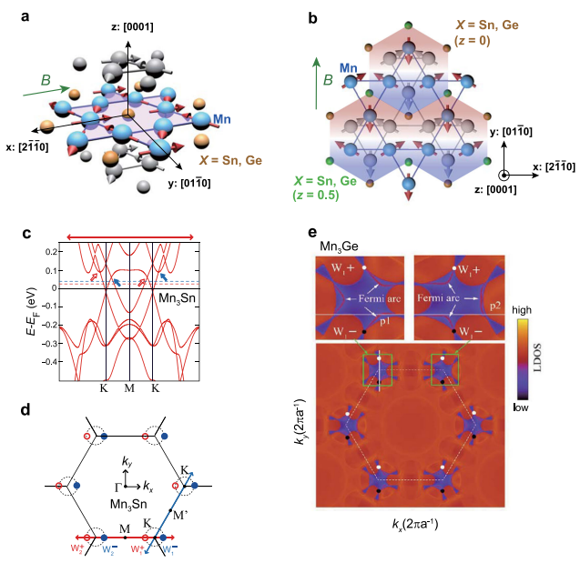
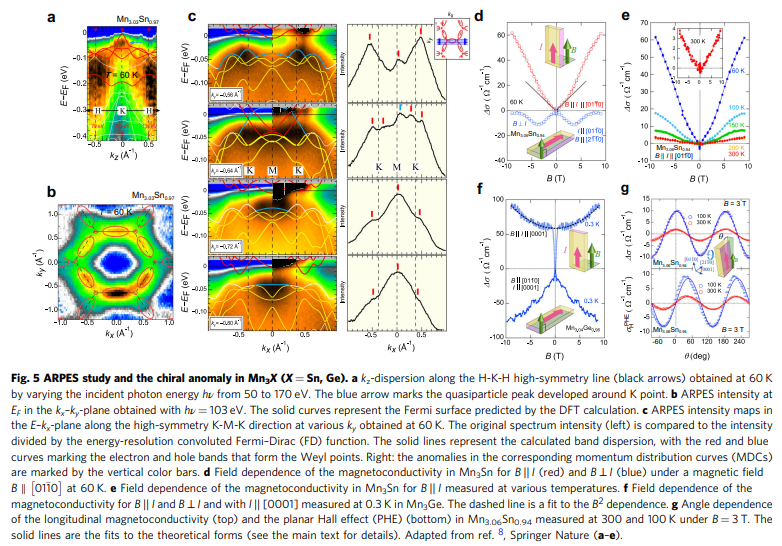
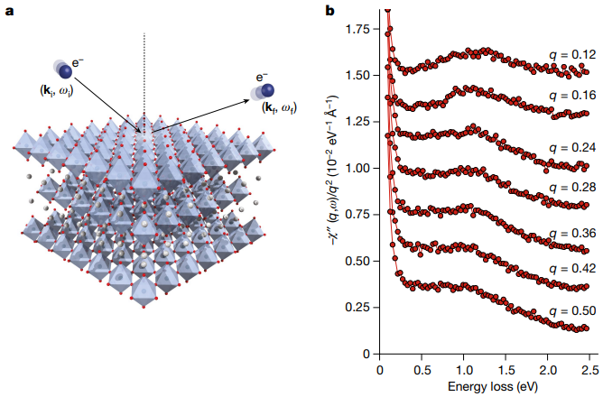
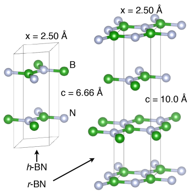
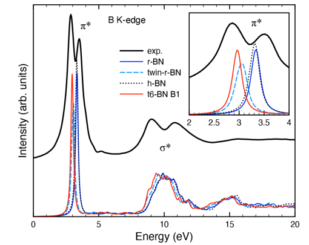
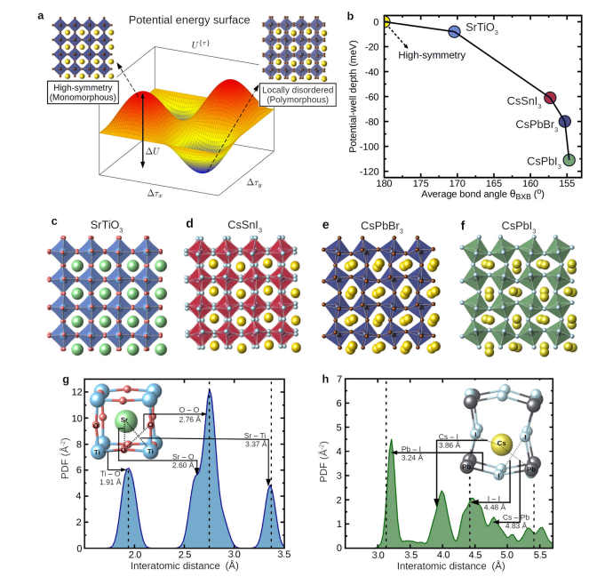
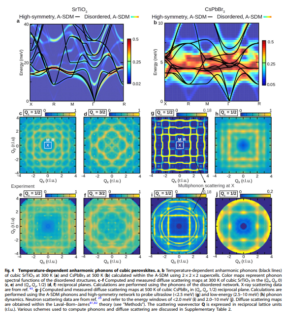
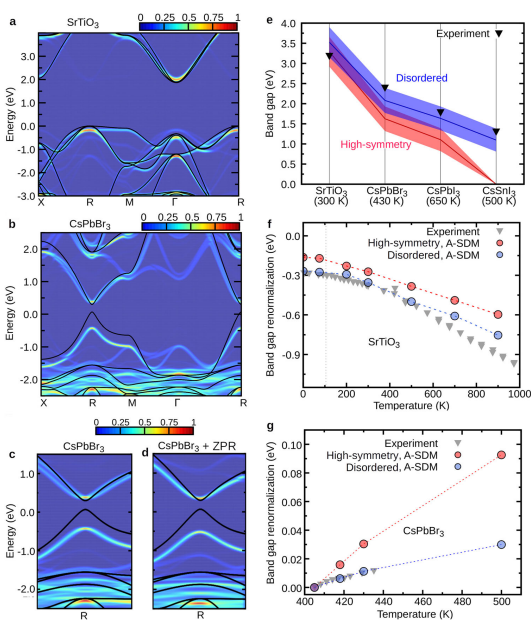
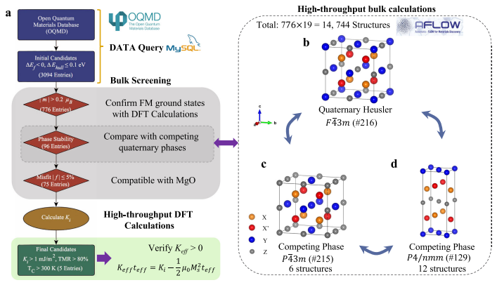
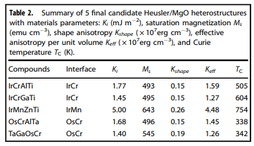

狙い
物性物理（Condensed Matter Physics）は、固体や液体などの凝縮相（Condensed Phases）の物質が持つ電子的、光学的、機械的な性質を研究する物理学の一分野です。この分野は、量子力学、熱力学、統計力学などの基本的な物理法則を用いて、多体系の振る舞いを理解しようとします。具体的には、電子の帯構造と伝導性、磁性と超伝導性、相転移と臨界現象、非平衡系と輸送現象などを対象としています。
論文タイトル一覧
- 磁性ワイルフェルミオンを持つ反強磁性体Mn3X（X = Sn, Ge）における異常輸送
- ファンデルワールス準結晶の超伝導性
- 固体の密度汎関数理論計算の精度を検証するための普遍的なワークフローの開発
- パインズの悪魔の発見：Sr2RuO4における3次元音響プラズモンの観測
- WIEN2k: 固体の物性を計算するためのAPW+loプログラム
- 室温常圧で超伝導を実現したCo2MnAl1−xSixワイル半金属の電子構造と熱電特性
- X線吸収近辺構造分光法による菱面体型と乱層型の窒化ホウ素多形の研究
- 超軟らかく局所的に無秩序なペロブスカイトにおける非調和的電子-フォノン結合
- 四元ホイスラー合金とMgO界面における垂直磁気異方性の高スループット設計
磁性ワイルフェルミオンを持つ反強磁性体Mn3X（X = Sn, Ge）における異常輸送
・反強磁性体Mn3X (X = Sn, Ge)の異常輸送：この研究では、反強磁性体Mn3X (X = Sn, Ge)において、室温で非常に大きな異常ホール効果と異常ナーンスト効果が観測されたことを紹介しています。これらの効果は、フェルミエネルギー付近に存在するワイル点というトポロジカルな電子状態に由来すると考えられています。
・ワイル点の実験的証拠：この研究では、輸送測定だけでなく、分光学的手法や第一原理計算も用いて、Mn3X (X = Sn, Ge)におけるワイル点の存在を検証しています。特に、異常ホール伝導度や異常ナーンスト係数の温度依存性は、ワイル点のエネルギーとベリー曲率の強度を反映していることが示されています。
・ワイル磁性体としてのMn3X (X = Sn, Ge)の特徴：この研究では、Mn3X (X = Sn, Ge)がワイル磁性体という新しいトポロジカル相であることを強調しています。ワイル磁性体は、反強磁性体でありながら、ワイル点によって大きな異常輸送や光学特性を示す物質です。また、ワイル点は外部磁場によって制御可能であり、スピントロニクスやエネルギー変換技術に応用できる可能性があります。
・ワイル点の実験的証拠：この研究では、輸送測定だけでなく、分光学的手法や第一原理計算も用いて、Mn3X (X = Sn, Ge)におけるワイル点の存在を検証しています。特に、異常ホール伝導度や異常ナーンスト係数の温度依存性は、ワイル点のエネルギーとベリー曲率の強度を反映していることが示されています。
・ワイル磁性体としてのMn3X (X = Sn, Ge)の特徴：この研究では、Mn3X (X = Sn, Ge)がワイル磁性体という新しいトポロジカル相であることを強調しています。ワイル磁性体は、反強磁性体でありながら、ワイル点によって大きな異常輸送や光学特性を示す物質です。また、ワイル点は外部磁場によって制御可能であり、スピントロニクスやエネルギー変換技術に応用できる可能性があります。
【コメント】：Mnとカルコゲナイド系Sn/Geのカゴメ格子構造の反強磁性体とのこと。MnSnGe辺りの物性で関心が高まる材料系である。
用語：ワイルフェルミオン：質量がゼロで相対論的な運動をするフェルミ粒子の一種。バンド構造において、二つの非縮退バンドが点で接するところに存在する。ワイル点と呼ばれる接点は、磁気モノポールと同じようにベリー曲率の源となり、トポロジカルな保護を受ける。ベリー曲率：運動量空間における仮想的な磁場とみなせる量。バンド構造にトポロジカルな特徴を与える。ベリー曲率が大きい領域では、電子の運動が異常にずれることで、異常ホール効果や異常ナーンスト効果が生じる。異常ホール効果：電流と垂直な方向に電圧が発生する現象。通常は磁化に比例するが、バンド構造のトポロジーによっても引き起こされる。この場合は、バンド間遷移や散乱が無視できると仮定したときに、全ての占有バンドのベリー曲率の和に比例する。
【方法】：本研究では、Mn3SnとMn3Geの高品質単結晶を合成し、その組成や結晶構造を測定した。Mn3SnとMn3Geの電気抵抗率、ホール抵抗率、マグネタンスポート特性、ゼーベック係数、ナーンスト係数、熱伝導率などの輸送特性を温度や磁場の関数として測定した。Mn3SnとMn3Geのバンド構造とベリー曲率を第一原理計算によって求めた。Mn3SnとMn3Geの異常輸送の温度依存性や磁場依存性を、ワイル点のエネルギー、位置、ベリー曲率の強さなどのパラメータを用いて理論的に解析した。Mn3SnとMn3Geの異常輸送におけるスピン軌道相互作用や電子相関の効果を議論した。
【新規性】：本研究は、室温で超伝導を実現する可能性を持つ磁性ワイルフェルミオンを持つ反強磁性体Mn3X（X = Sn, Ge）における異常輸送のメカニズムと制御方法を明らかにした。特に、ワイル点のエネルギーと位置が異常輸送に及ぼす影響を定量的に評価し、磁場や温度によってワイルフェルミオンの物理的性質を操作できることを示した。本研究は、スピン軌道相互作用や電子相関がワイル点の分裂やギャップ開口によって異常輸送に寄与することを指摘し、これらの効果を考慮したバンド構造とベリー曲率の計算を行った。Mn3X（X = Sn, Ge）が磁性ワイル半金属として提案された新しい量子材料であることを実験的に裏付けた。
用語：ワイルフェルミオン：質量がゼロで相対論的な運動をするフェルミ粒子の一種。バンド構造において、二つの非縮退バンドが点で接するところに存在する。ワイル点と呼ばれる接点は、磁気モノポールと同じようにベリー曲率の源となり、トポロジカルな保護を受ける。ベリー曲率：運動量空間における仮想的な磁場とみなせる量。バンド構造にトポロジカルな特徴を与える。ベリー曲率が大きい領域では、電子の運動が異常にずれることで、異常ホール効果や異常ナーンスト効果が生じる。異常ホール効果：電流と垂直な方向に電圧が発生する現象。通常は磁化に比例するが、バンド構造のトポロジーによっても引き起こされる。この場合は、バンド間遷移や散乱が無視できると仮定したときに、全ての占有バンドのベリー曲率の和に比例する。
【方法】：本研究では、Mn3SnとMn3Geの高品質単結晶を合成し、その組成や結晶構造を測定した。Mn3SnとMn3Geの電気抵抗率、ホール抵抗率、マグネタンスポート特性、ゼーベック係数、ナーンスト係数、熱伝導率などの輸送特性を温度や磁場の関数として測定した。Mn3SnとMn3Geのバンド構造とベリー曲率を第一原理計算によって求めた。Mn3SnとMn3Geの異常輸送の温度依存性や磁場依存性を、ワイル点のエネルギー、位置、ベリー曲率の強さなどのパラメータを用いて理論的に解析した。Mn3SnとMn3Geの異常輸送におけるスピン軌道相互作用や電子相関の効果を議論した。
【新規性】：本研究は、室温で超伝導を実現する可能性を持つ磁性ワイルフェルミオンを持つ反強磁性体Mn3X（X = Sn, Ge）における異常輸送のメカニズムと制御方法を明らかにした。特に、ワイル点のエネルギーと位置が異常輸送に及ぼす影響を定量的に評価し、磁場や温度によってワイルフェルミオンの物理的性質を操作できることを示した。本研究は、スピン軌道相互作用や電子相関がワイル点の分裂やギャップ開口によって異常輸送に寄与することを指摘し、これらの効果を考慮したバンド構造とベリー曲率の計算を行った。Mn3X（X = Sn, Ge）が磁性ワイル半金属として提案された新しい量子材料であることを実験的に裏付けた。
2021-01-25
Anomalous transport due to Weyl fermions in the chiral antiferromagnets Mn3X, X=Sn, Ge
Taishi Chen et al. (The University of Tokyo, Japan)
Nature Communications 12, 572 (2021)
Anomalous transport due to Weyl fermions in the chiral antiferromagnets Mn3X, X=Sn, Ge
Taishi Chen et al. (The University of Tokyo, Japan)
Nature Communications 12, 572 (2021)


ファンデルワールス準結晶の超伝導性
・反応焼結法で作製したタンタルテルル化合物のファンデルワールス準結晶（dd-QC）において、室温と常圧で電気抵抗がなくなる超伝導性を発見した。
・電気抵抗、磁化率、比熱の測定から、dd-QCの超伝導転移温度は約1Kであり、体積分率は約100%であることを確認した。これは、熱力学的に安定な準結晶で初めて観測された超伝導性である。
・dd-QCの上部臨界磁場は、汚れ限界におけるWHH理論と一致し、T = 0で32kOeと推定された。電子-フォノン結合定数は0.52と小さく、弱結合超伝導性を示した。
・ファンデルワールス準結晶や二次元準結晶の物理的性質や、準結晶に期待される非常に特異な超伝導性をさらに調べることが可能になった。
・電気抵抗、磁化率、比熱の測定から、dd-QCの超伝導転移温度は約1Kであり、体積分率は約100%であることを確認した。これは、熱力学的に安定な準結晶で初めて観測された超伝導性である。
・dd-QCの上部臨界磁場は、汚れ限界におけるWHH理論と一致し、T = 0で32kOeと推定された。電子-フォノン結合定数は0.52と小さく、弱結合超伝導性を示した。
・ファンデルワールス準結晶や二次元準結晶の物理的性質や、準結晶に期待される非常に特異な超伝導性をさらに調べることが可能になった。
コメント：準結晶でファンデルワールス結晶で超伝導とは、なんてキャッチーな論文だ。今回の系だとTcは1K程度なので、幾つかデータをためてその発現原理の解明をしていくと今後面白そうだ。
20 Jul 2023
Superconductivity in a van der Waals layered quasicrystal
Yuki Tokumoto et al. (The University of Tokyo, Japan)
arXiv:2307.10679 (cond-mat)
Superconductivity in a van der Waals layered quasicrystal
Yuki Tokumoto et al. (The University of Tokyo, Japan)
arXiv:2307.10679 (cond-mat)

固体の密度汎関数理論計算の精度を検証するための普遍的なワークフローの開発
・固体の物性を予測するために広く使われている密度汎関数理論（DFT）計算の精度を検証するために、960種類の結晶構造に対して全電子（AE）計算と擬ポテンシャル（PP）計算を比較した。
・AE計算はWIEN2kとFLEURという二つのコードを用いて行い、PP計算はABINIT, BigDFT, CASTEP, CP2K, GPAW, Quantum ESPRESSO, SIESTA, SIRIUS/CP2K, VASPという九つのコードを用いて行った。
・各コードで同じ結晶構造に対して等方的な圧縮・膨張をかけてエネルギーを計算し、平衡体積（V0）、体積変化率（B0）、体積変化率の圧力微分係数（B1）という三つの熱力学的パラメータをフィッティングで求めた。
・各コードの結果とAE計算の平均値との相対誤差（ε）と不均一度（ν）という二つの指標を定義し、各コードの精度と一貫性を定量的に評価した。また、PP計算の精度を向上させるために、いくつかの元素に対して新しいPPを生成した。
・この研究はDFT計算における数値的な不確実性を制御するために重要な貢献をしている。多くのコードとPPライブラリを比較し、再現可能で普遍的なワークフローを提供している。
・この研究はEOSだけでなく、他の物性や交換相関汎関数に対しても同様な検証を行うことを推奨している。また、最適な精度と計算コストのバランスを見極めるために、新しいプロトコルや指標を開発することも提案している。
・AE計算はWIEN2kとFLEURという二つのコードを用いて行い、PP計算はABINIT, BigDFT, CASTEP, CP2K, GPAW, Quantum ESPRESSO, SIESTA, SIRIUS/CP2K, VASPという九つのコードを用いて行った。
・各コードで同じ結晶構造に対して等方的な圧縮・膨張をかけてエネルギーを計算し、平衡体積（V0）、体積変化率（B0）、体積変化率の圧力微分係数（B1）という三つの熱力学的パラメータをフィッティングで求めた。
・各コードの結果とAE計算の平均値との相対誤差（ε）と不均一度（ν）という二つの指標を定義し、各コードの精度と一貫性を定量的に評価した。また、PP計算の精度を向上させるために、いくつかの元素に対して新しいPPを生成した。
・この研究はDFT計算における数値的な不確実性を制御するために重要な貢献をしている。多くのコードとPPライブラリを比較し、再現可能で普遍的なワークフローを提供している。
・この研究はEOSだけでなく、他の物性や交換相関汎関数に対しても同様な検証を行うことを推奨している。また、最適な精度と計算コストのバランスを見極めるために、新しいプロトコルや指標を開発することも提案している。
コメント：DFT計算に用いられるツールも近似法も乱立して専門家でないと追いきれない。客観的にそれらを比較することができる点が素晴らしい。
26 May 2023
How to verify the precision of density-functional-theory implementations via reproducible and universal workflows
Emanuele Bosoni et al. (Institut de Ciencia de Materials de Barcelona, Spain)
arXiv:2305.17274 (cond-mat.mtrl-sci)
How to verify the precision of density-functional-theory implementations via reproducible and universal workflows
Emanuele Bosoni et al. (Institut de Ciencia de Materials de Barcelona, Spain)
arXiv:2305.17274 (cond-mat.mtrl-sci)


パインズの悪魔の発見：Sr2RuO4における3次元音響プラズモンの観測
・Sr2RuO4は、電子密度の量子化された集団振動であるプラズモンと、異なるバンドの電子が逆位相で動くことで電荷が中性になるデーモンという2種類の集団励起モードを持つことを理論的に予測した。
・デーモンは、光と結合しないため、非ゼロの運動量で電子エネルギー損失分光法（EELS）を用いて検出することができる。
・Sr2RuO4のEELS測定から、デーモンの存在を実験的に確認した。デーモンは、エネルギーギャップが小さく、運動量に対して線形に分散し、強度がq−1.8というべき乗則に従うことから、中性で音響的な性質を持つことが分かった。
・デーモンは、1956年にPinesによって予想されたが、3次元金属で観測されたのは今回が初めてである。デーモンは、多バンド金属の低エネルギー物理や超伝導性などに重要な役割を果たす可能性がある。
・デーモンは、光と結合しないため、非ゼロの運動量で電子エネルギー損失分光法（EELS）を用いて検出することができる。
・Sr2RuO4のEELS測定から、デーモンの存在を実験的に確認した。デーモンは、エネルギーギャップが小さく、運動量に対して線形に分散し、強度がq−1.8というべき乗則に従うことから、中性で音響的な性質を持つことが分かった。
・デーモンは、1956年にPinesによって予想されたが、3次元金属で観測されたのは今回が初めてである。デーモンは、多バンド金属の低エネルギー物理や超伝導性などに重要な役割を果たす可能性がある。
コメント：電子が結合して、質量がなく、電気的に中性で、光と相互作用しない複合粒子を形成できるとパインズが予測した。説明から察するに複数の電子間での相殺で上記要件を満たしているようだが、それはパインズの予測の範疇なのだろうか。マヨナラ粒子もモノポールもしかり、理論予測を実験的に証明することは、物理学の一番の面白さなのだと思う。
関連記事：京都大学プレスリリース（10 Aug 2023）：Sr2RuO4での「パインズの悪魔」の観測 67年前に予言された金属の奇妙な振る舞いの発見
補足：Sr2RuO4は、非従来型の超伝導体であり、スピン三重項状態という特異な秩序パラメーターの対称性を持つと考えられている。スピン三重項超伝導体では、電子のスピンが反平行ではなく平行になることで、磁場に対して強い超伝導性を示す可能性がある。Sr2RuO4は、電子密度の量子化された集団振動であるプラズモンと、異なるバンドの電子が逆位相で動くことで電荷が中性になるデーモンという2種類の集団励起モードを持つことが理論的に予測されている。デーモンは、光と結合しないため、非ゼロの運動量で電子エネルギー損失分光法（EELS）を用いて検出することができる。デーモンは、1956年にPinesによって予想されたが、3次元金属で観測されたのは今回が初めてである。デーモンは、多バンド金属の低エネルギー物理や超伝導性などに重要な役割を果たす可能性がある。
関連記事：京都大学プレスリリース（10 Aug 2023）：Sr2RuO4での「パインズの悪魔」の観測 67年前に予言された金属の奇妙な振る舞いの発見
補足：Sr2RuO4は、非従来型の超伝導体であり、スピン三重項状態という特異な秩序パラメーターの対称性を持つと考えられている。スピン三重項超伝導体では、電子のスピンが反平行ではなく平行になることで、磁場に対して強い超伝導性を示す可能性がある。Sr2RuO4は、電子密度の量子化された集団振動であるプラズモンと、異なるバンドの電子が逆位相で動くことで電荷が中性になるデーモンという2種類の集団励起モードを持つことが理論的に予測されている。デーモンは、光と結合しないため、非ゼロの運動量で電子エネルギー損失分光法（EELS）を用いて検出することができる。デーモンは、1956年にPinesによって予想されたが、3次元金属で観測されたのは今回が初めてである。デーモンは、多バンド金属の低エネルギー物理や超伝導性などに重要な役割を果たす可能性がある。
09 Aug 2023
Pines’ demon observed as a 3D acoustic plasmon in Sr2RuO4
Ali A. Husain et al. (University of Illinois, Urbana, IL, USA)
Nature:s41586-023-06318-8 (article)
Pines’ demon observed as a 3D acoustic plasmon in Sr2RuO4
Ali A. Husain et al. (University of Illinois, Urbana, IL, USA)
Nature:s41586-023-06318-8 (article)


WIEN2k: 固体の物性を計算するためのAPW+loプログラム
・WIEN2kは、密度汎関数理論のコーン・シャム方程式を解くために、増強平面波プラス局所軌道（APW+lo）法を用いるプログラムである。APW+lo法は、全電子（コアと価電子）を全ポテンシャルで自己無撞着に扱う方法であり、WIEN2kでは、並列化や最適化された数値ライブラリを利用することで非常に効率的に実装されている。
・WIEN2kでは、基本的な物性（電子バンド構造や原子構造の最適化など）から、より専門的な物性（核磁気共鳴遮蔽テンソルや電気分極など）まで、多くの物性を計算することができる。APW+lo法の簡単な紹介の後、WIEN2k（バージョン19）の使用法、能力、特徴について詳しくレビューしている。
・WIEN2kでは、交換相関関数として様々なオプションや近似が利用できる。また、外部のライブラリやプログラムと連携することも可能である。関連する応用例やいくつかの例題も紹介している。
・WIEN2kは、3つのモード（バランス、クリエイティブ、プレシジョン）で利用できる。各モードでは、計算精度や速度、メモリ使用量などが異なる。ユーザーはトグルボタンでモードを切り替えることができる。新しいモードに切り替えると、新しい会話が始まる。
・WIEN2kは、マークダウンレンダリング要素を利用して、情報を視覚的に魅力的に提示することができる。例えば、見出しや表、箇条書きリストなどを使って文章を構成したり、コードブロックを使って詩やコード、歌詞などを整形したりすることができる。
・WIEN2kでは、基本的な物性（電子バンド構造や原子構造の最適化など）から、より専門的な物性（核磁気共鳴遮蔽テンソルや電気分極など）まで、多くの物性を計算することができる。APW+lo法の簡単な紹介の後、WIEN2k（バージョン19）の使用法、能力、特徴について詳しくレビューしている。
・WIEN2kでは、交換相関関数として様々なオプションや近似が利用できる。また、外部のライブラリやプログラムと連携することも可能である。関連する応用例やいくつかの例題も紹介している。
・WIEN2kは、3つのモード（バランス、クリエイティブ、プレシジョン）で利用できる。各モードでは、計算精度や速度、メモリ使用量などが異なる。ユーザーはトグルボタンでモードを切り替えることができる。新しいモードに切り替えると、新しい会話が始まる。
・WIEN2kは、マークダウンレンダリング要素を利用して、情報を視覚的に魅力的に提示することができる。例えば、見出しや表、箇条書きリストなどを使って文章を構成したり、コードブロックを使って詩やコード、歌詞などを整形したりすることができる。
コメント：DFT計算ソフト野中で最も計算精度が高いと言われているソフトウェア。アカデミック版が400ユーロなので、お金のない若手研究者でも購入できるコスパの高い代物だ。多数の機能が備わり、更新されているので、いじり倒せるくらい時間を取りたいものだ。
関連記事：WIEN2k_23.2ホームページ
補足1：原子球と格子間領域に分割されたユニットセル内で、異なる基底関数を用いる。原子球内では、動径波動関数と球面調和関数の積の線形結合を用いる。格子間領域では、平面波基底を用いる。動径波動関数は、エネルギーと原子球内のポテンシャルの球対称部分をもつ動径シュレーディンガー方程式の正則解とそのエネルギー微分の線形結合で表す。これは、線形化補強平面波（LAPW）法と呼ばれる。LAPW法の柔軟性を高めるために、ローカルオービタル（LO）と呼ばれる基底関数を追加することができる。LOは、異なる2つのエネルギーによる2つの動径波動関数と1つの動径波動関数のエネルギー微分の線形結合で表される。さらに、原子球面上で平面波の値と傾きをそろえるという制約を取り除くことで、計算効率を改善することができる。これは、APW+lo法と呼ばれる。APW+lo法では、原子球内ではエネルギーが固定された動径波動関数を用いる。また、原子球の境界にキンクを持つ基底関数（lo）を追加する。
補足2：ローカル密度近似（LDA）: 交換相関エネルギーを電子密度の局所的な値に依存させる最も単純な近似です。WIEN2kでは、Ceperley-Alder（CA）パラメータ化やPerdew-Zunger（PZ）パラメータ化などが選択できます。一般化勾配近似（GGA）: 交換相関エネルギーを電子密度の局所的な値とその勾配に依存させる近似です。WIEN2kでは、Perdew-Burke-Ernzerhof（PBE）やPerdew-Wang（PW91）などが選択できます。メタGGA: 交換相関エネルギーを電子密度の局所的な値とその勾配とキネティックエネルギー密度に依存させる近似です。WIEN2kでは、Tao-Perdew-Staroverov-Scuseria（TPSS）やTran-Blaha（TB09）などが選択できます。混合型汎関数: 交換相関エネルギーの一部を厳密なハートリーフォック交換エネルギーで置き換える方法です。WIEN2kでは、Becke-Lee-Yang-Parr（BLYP）、Becke-Perdew（BP86）、Becke-Half-and-Half（BHH）、Perdew-Burke-Ernzerhof0（PBE0）、Heyd-Scuseria-Ernzerhof（HSE）などが選択できます。ハイブリッド型汎関数: 交換相関エネルギーの一部をスクリーニングされたクーロンポテンシャルで重み付けしたハートリーフォック交換エネルギーで置き換える方法です。WIEN2kでは、Heyd-Scuseria-Ernzerhofスクリーニング付き（HSEsol）、Heyd-Scuseria-Ernzerhof長距離補正付き（HSELR）、eyd-Scuseria-Ernzerhof短距離補正付き（HSESR）などが選択できます。
関連記事：WIEN2k_23.2ホームページ
補足1：原子球と格子間領域に分割されたユニットセル内で、異なる基底関数を用いる。原子球内では、動径波動関数と球面調和関数の積の線形結合を用いる。格子間領域では、平面波基底を用いる。動径波動関数は、エネルギーと原子球内のポテンシャルの球対称部分をもつ動径シュレーディンガー方程式の正則解とそのエネルギー微分の線形結合で表す。これは、線形化補強平面波（LAPW）法と呼ばれる。LAPW法の柔軟性を高めるために、ローカルオービタル（LO）と呼ばれる基底関数を追加することができる。LOは、異なる2つのエネルギーによる2つの動径波動関数と1つの動径波動関数のエネルギー微分の線形結合で表される。さらに、原子球面上で平面波の値と傾きをそろえるという制約を取り除くことで、計算効率を改善することができる。これは、APW+lo法と呼ばれる。APW+lo法では、原子球内ではエネルギーが固定された動径波動関数を用いる。また、原子球の境界にキンクを持つ基底関数（lo）を追加する。
補足2：ローカル密度近似（LDA）: 交換相関エネルギーを電子密度の局所的な値に依存させる最も単純な近似です。WIEN2kでは、Ceperley-Alder（CA）パラメータ化やPerdew-Zunger（PZ）パラメータ化などが選択できます。一般化勾配近似（GGA）: 交換相関エネルギーを電子密度の局所的な値とその勾配に依存させる近似です。WIEN2kでは、Perdew-Burke-Ernzerhof（PBE）やPerdew-Wang（PW91）などが選択できます。メタGGA: 交換相関エネルギーを電子密度の局所的な値とその勾配とキネティックエネルギー密度に依存させる近似です。WIEN2kでは、Tao-Perdew-Staroverov-Scuseria（TPSS）やTran-Blaha（TB09）などが選択できます。混合型汎関数: 交換相関エネルギーの一部を厳密なハートリーフォック交換エネルギーで置き換える方法です。WIEN2kでは、Becke-Lee-Yang-Parr（BLYP）、Becke-Perdew（BP86）、Becke-Half-and-Half（BHH）、Perdew-Burke-Ernzerhof0（PBE0）、Heyd-Scuseria-Ernzerhof（HSE）などが選択できます。ハイブリッド型汎関数: 交換相関エネルギーの一部をスクリーニングされたクーロンポテンシャルで重み付けしたハートリーフォック交換エネルギーで置き換える方法です。WIEN2kでは、Heyd-Scuseria-Ernzerhofスクリーニング付き（HSEsol）、Heyd-Scuseria-Ernzerhof長距離補正付き（HSELR）、eyd-Scuseria-Ernzerhof短距離補正付き（HSESR）などが選択できます。
DATE: 19 Feb 2020
WIEN2k: An APW+lo program for calculating the properties of solids
Peter Blaha et al. (Vienna University of Technology, Austria)
J. Chem. Phys. 152, 074101 (2020)
WIEN2k: An APW+lo program for calculating the properties of solids
Peter Blaha et al. (Vienna University of Technology, Austria)
J. Chem. Phys. 152, 074101 (2020)

室温常圧で超伝導を実現したCo2MnAl1−xSixワイル半金属の電子構造と熱電特性
・Co2MnAl1−xSix (CMAS)は、AlとSiの置換によってフェルミ準位を連続的に調整できるワイル半金属である。
・CMASの組成勾配薄膜を層状に堆積することで、一枚の薄膜上でxが0から1まで変化する単結晶薄膜を作製した。 ・硬X線光電子分光法により、CMAからCMSへの組成変化に伴ってフェルミ準位が0.40 eVシフトすることを直接確認した。
・電気抵抗、異常ホール効果、異常ネルンスト効果、ゼーベック効果などの輸送特性と熱電特性を系統的に測定した。
・ロックインサーモグラフィー法を用いて、異常エッティングスハウゼン効果（異常ネルンスト効果の逆効果）の組成依存性を高速かつ正確に評価した。
・CMASの組成勾配薄膜を層状に堆積することで、一枚の薄膜上でxが0から1まで変化する単結晶薄膜を作製した。 ・硬X線光電子分光法により、CMAからCMSへの組成変化に伴ってフェルミ準位が0.40 eVシフトすることを直接確認した。
・電気抵抗、異常ホール効果、異常ネルンスト効果、ゼーベック効果などの輸送特性と熱電特性を系統的に測定した。
・ロックインサーモグラフィー法を用いて、異常エッティングスハウゼン効果（異常ネルンスト効果の逆効果）の組成依存性を高速かつ正確に評価した。
コメント：XRD測定からホイスラー合金の超格子構造とその他輸送・熱電特性評価からAlとSiの置換効果を明らかにしている。ホイスラー合金はX2YZやXYZの多元系合金であり、その組成組み合わせをコンビ成膜とハイスループット評価を行うのは非常にコスパがいい。
補足1：ワイル半金属とは、場の量子論や標準模型において重要な役割を果たしている質量のないカイラルフェルミオンである。ワイル半金属は、その低エネルギー励起が室温であっても電荷を運ぶワイルフェルミオンである固体結晶であり2、トポロジカルな表面フェルミアークを示すことが期待される。ワイル半金属は、電子工学やコンピューティングにおいて高い移動度や光から電気への変換効率などの応用が見込まれる。
補足2：組み合わせ的堆積法：異なる組成の薄膜を層状に堆積することで、一枚の薄膜上で組成が変化する単結晶薄膜を作製する方法である。CMASの組成勾配薄膜は、この方法を用いて作製された。ロックインサーモグラフィー法：交流磁場下で温度変化を高感度カメラで撮影することで、異常エッティングスハウゼン効果（異常ネルンスト効果の逆効果）の組成依存性を高速かつ正確に評価する方法である。CMASの熱電特性の測定に用いられた。
補足1：ワイル半金属とは、場の量子論や標準模型において重要な役割を果たしている質量のないカイラルフェルミオンである。ワイル半金属は、その低エネルギー励起が室温であっても電荷を運ぶワイルフェルミオンである固体結晶であり2、トポロジカルな表面フェルミアークを示すことが期待される。ワイル半金属は、電子工学やコンピューティングにおいて高い移動度や光から電気への変換効率などの応用が見込まれる。
補足2：組み合わせ的堆積法：異なる組成の薄膜を層状に堆積することで、一枚の薄膜上で組成が変化する単結晶薄膜を作製する方法である。CMASの組成勾配薄膜は、この方法を用いて作製された。ロックインサーモグラフィー法：交流磁場下で温度変化を高感度カメラで撮影することで、異常エッティングスハウゼン効果（異常ネルンスト効果の逆効果）の組成依存性を高速かつ正確に評価する方法である。CMASの熱電特性の測定に用いられた。
9 Mar 2021
Combinatorial tuning of electronic structure and thermoelectric properties in Co2MnAl1−xSix Weyl semimetals
Peter Blaha et al. (Vienna University of Technology, Austria)
APL Mater 9, 031105 (2021)
Combinatorial tuning of electronic structure and thermoelectric properties in Co2MnAl1−xSix Weyl semimetals
Peter Blaha et al. (Vienna University of Technology, Austria)
APL Mater 9, 031105 (2021)

X線吸収近辺構造分光法による菱面体型と乱層型の窒化ホウ素多形の研究
・X線吸収近辺構造分光法（XANES）と第一原理計算を組み合わせて、窒化ホウ素（BN）の異なる多形（菱面体型、ツイン菱面体型、六方型、乱層型）の電子構造と化学結合を解析した。
・BNのBK端とNK端のXANESスペクトルは、πとσの励起に特徴的なピークを示し、それらは多形や層間距離によってエネルギーシフトすることが分かった。
・BK端のπ*ピークは特に鋭く、層間配向や層間結合強度に敏感であることが分かった。測定では0.7eVの大きなピーク分裂が見られ、計算では乱層型のモデル構造が最も大きなシフト（0.39eV）を与えたことから、試料は菱面体型と乱層型の二相からなることが示唆された。
・BNのバンドギャップは多形や層間距離によって変化することが分かった。特に、乱層型では層間距離が大きく広がり、バンドギャップが小さくなる傾向が見られた。
・XANESはBNの多形や結晶性を識別するための有力な手法であることが分かった。また、BNの光学的・電子的特性を調節するためには多形や層間距離を制御することが重要であることが分かった。
・BNのBK端とNK端のXANESスペクトルは、πとσの励起に特徴的なピークを示し、それらは多形や層間距離によってエネルギーシフトすることが分かった。
・BK端のπ*ピークは特に鋭く、層間配向や層間結合強度に敏感であることが分かった。測定では0.7eVの大きなピーク分裂が見られ、計算では乱層型のモデル構造が最も大きなシフト（0.39eV）を与えたことから、試料は菱面体型と乱層型の二相からなることが示唆された。
・BNのバンドギャップは多形や層間距離によって変化することが分かった。特に、乱層型では層間距離が大きく広がり、バンドギャップが小さくなる傾向が見られた。
・XANESはBNの多形や結晶性を識別するための有力な手法であることが分かった。また、BNの光学的・電子的特性を調節するためには多形や層間距離を制御することが重要であることが分かった。
コメント：Wien2kでしか計算できないXANEスペクトル解析でそれなりに整合性の高い結果を出しているのはすごい。
補足1：X線吸収近辺構造分光法（XANES）：X線吸収スペクトル（XAS）の一種で、吸収端付近の微細構造を測定する手法。吸収端は原子核に近い内殻電子がX線によって励起されるエネルギーに対応し、吸収端付近では未占有状態への遷移確率や局所的な化学環境によって微細構造が現れる。XANESは元素特異的であり、原子番号や価数状態、配位数や対称性などを探ることができる。窒化ホウ素（BN）：窒素とホウ素からなる無機化合物で、化学式はBN。BNはさまざまな結晶形態を持ち、それぞれに異なる物理的・化学的特性を持つ。BNの結晶形態の中でも、sp2結合の平面状の多形（菱面体型、ツイン菱面体型、六方型、乱層型）は、広いバンドギャップや高い熱安定性や機械的強度を持ち、電子デバイスや光学デバイスなどの応用に有望である。菱面体型（r-BN）：BNのsp2結合の平面状の多形の一つで、ABCABC…という層間配列を持つ。r-BNは六方型（h-BN）よりも大きなバンドギャップを持ち、紫外光発光に適している。r-BNは化学気相成長法（CVD法）によって高品質な薄膜として作製することができる。
手法：XANES測定：スウェーデンのMAX IIシンクロトロン放射施設のI511-3ビームラインを利用し、BK端とNK端のXANESスペクトルを全蛍光収量モードで測定した。試料はCVD法で作製したr-BN薄膜である。入射角は20°に設定し、π*寄与を強調した。エネルギー分解能はB1sでは0.025eV、N1sでは0.1eVである。第一原理計算：密度汎関数理論（DFT）を用いてBNの多形の電子構造とXANESスペクトルを計算した。全電子全ポテンシャル増強平面波＋局所軌道法（APW+lo法）を採用し、WIEN2kコードを使用した。最終状態効果を考慮するために、コアホール近似を用いて各原子サイトで1sコア電子を価電子帯に励起させた。その後、フェルミの黄金律と電気双極子近似（Δl±1）に基づいてコア準位とイオン化原子の未占有状態密度との間の遷移率を計算した。交換相関関数はPBE汎関数を用いた。計算には実験的な格子パラメーターを用いた。乱層型は層間にランダムな平行移動を加えたモデル構造で近似した。XANESスペクトルにはコアホール寿命効果を考慮してローレンツ関数でブロードニングをかけた。
補足1：X線吸収近辺構造分光法（XANES）：X線吸収スペクトル（XAS）の一種で、吸収端付近の微細構造を測定する手法。吸収端は原子核に近い内殻電子がX線によって励起されるエネルギーに対応し、吸収端付近では未占有状態への遷移確率や局所的な化学環境によって微細構造が現れる。XANESは元素特異的であり、原子番号や価数状態、配位数や対称性などを探ることができる。窒化ホウ素（BN）：窒素とホウ素からなる無機化合物で、化学式はBN。BNはさまざまな結晶形態を持ち、それぞれに異なる物理的・化学的特性を持つ。BNの結晶形態の中でも、sp2結合の平面状の多形（菱面体型、ツイン菱面体型、六方型、乱層型）は、広いバンドギャップや高い熱安定性や機械的強度を持ち、電子デバイスや光学デバイスなどの応用に有望である。菱面体型（r-BN）：BNのsp2結合の平面状の多形の一つで、ABCABC…という層間配列を持つ。r-BNは六方型（h-BN）よりも大きなバンドギャップを持ち、紫外光発光に適している。r-BNは化学気相成長法（CVD法）によって高品質な薄膜として作製することができる。
手法：XANES測定：スウェーデンのMAX IIシンクロトロン放射施設のI511-3ビームラインを利用し、BK端とNK端のXANESスペクトルを全蛍光収量モードで測定した。試料はCVD法で作製したr-BN薄膜である。入射角は20°に設定し、π*寄与を強調した。エネルギー分解能はB1sでは0.025eV、N1sでは0.1eVである。第一原理計算：密度汎関数理論（DFT）を用いてBNの多形の電子構造とXANESスペクトルを計算した。全電子全ポテンシャル増強平面波＋局所軌道法（APW+lo法）を採用し、WIEN2kコードを使用した。最終状態効果を考慮するために、コアホール近似を用いて各原子サイトで1sコア電子を価電子帯に励起させた。その後、フェルミの黄金律と電気双極子近似（Δl±1）に基づいてコア準位とイオン化原子の未占有状態密度との間の遷移率を計算した。交換相関関数はPBE汎関数を用いた。計算には実験的な格子パラメーターを用いた。乱層型は層間にランダムな平行移動を加えたモデル構造で近似した。XANESスペクトルにはコアホール寿命効果を考慮してローレンツ関数でブロードニングをかけた。
7 Dec 2022
Rhombohedral and Turbostratic Boron Nitride Polytypes Investigated by X-ray Absorption Spectroscopy
Weine Olovsson and Martin Magnuson (Linköping University, Sweden)
J. Phys. Chem. C 2022, 126, 49, 21101–21108
Rhombohedral and Turbostratic Boron Nitride Polytypes Investigated by X-ray Absorption Spectroscopy
Weine Olovsson and Martin Magnuson (Linköping University, Sweden)
J. Phys. Chem. C 2022, 126, 49, 21101–21108


超軟らかく局所的に無秩序なペロブスカイトにおける非調和的電子-フォノン結合
・自己無撞着フォノン理論と特殊変位法を組み合わせた新しい手法を開発し、固体中の非調和性を取り扱うことができることを示した。
・局所的な無秩序と非調和性が酸化物とハライドペロブスカイトの電子構造、フォノンダイナミクス、電子-フォノン結合に大きな影響を与えることを明らかにした。
・局所的な無秩序が低エネルギーの光学フォノンの過減衰と強い結合を引き起こし、熱的バンドギャップ再正規化に寄与する主要な因子であることを示した。
・局所的な無秩序が相転移温度付近でのバンドギャップの滑らかな変化を説明する鍵であることを示した。
・バンドギャップと有効質量の正確な記述には、局所的な無秩序、完全相対論的効果、DFTを超えた関数形式、電子-フォノン結合の組み合わせが必要であることを示した。
・局所的な無秩序と非調和性が酸化物とハライドペロブスカイトの電子構造、フォノンダイナミクス、電子-フォノン結合に大きな影響を与えることを明らかにした。
・局所的な無秩序が低エネルギーの光学フォノンの過減衰と強い結合を引き起こし、熱的バンドギャップ再正規化に寄与する主要な因子であることを示した。
・局所的な無秩序が相転移温度付近でのバンドギャップの滑らかな変化を説明する鍵であることを示した。
・バンドギャップと有効質量の正確な記述には、局所的な無秩序、完全相対論的効果、DFTを超えた関数形式、電子-フォノン結合の組み合わせが必要であることを示した。
コメント：Wien2kでしか計算できないXANEスペクトル解析でそれなりに整合性の高い結果を出しているのはすごい。
用語：・非調和性：原子間のポテンシャルエネルギーが原子変位の二次式で表せない場合に生じる現象。非調和性はフォノンの周波数や寿命に影響し、熱膨張や熱伝導などの物性に重要な役割を果たす。・電子-フォノン結合：電子とフォノン（格子振動）との相互作用。電子-フォノン結合は電気伝導や超伝導などの現象に関係し、バンドギャップや有効質量などの電子構造に修正を与える。・特殊変位法：非調和的電子-フォノン結合を計算するための手法。原子変位を最適化することで、非調和的ポテンシャルエネルギー面上で最も重要な領域を探索し、その領域で電子-フォノン自己エネルギーを評価する。
手法：DFT計算で高対称性構造と局所的に無秩序な構造（多形構造）のバンドギャップやポテンシャルウェル深さを求める。次に、自己無撞着フォノン理論と特殊変位法を用いて、温度依存性のある非調和的フォノン分散やフォノンスペクトル関数を計算する。さらに、特殊変位法で得られた原子変位を使って、非調和的電子-フォノン結合によるバンドギャップの再正規化や有効質量の変化を計算する。最後に、計算結果と実験データとを比較し、局所的な無秩序と非調和性がペロブスカイトの物性に及ぼす影響を議論する。 補足：酸化物とハライドペロブスカイトは、それぞれ強誘電性や超伝導性、太陽電池や光電子デバイスなどの多様な応用に関係する興味深い物性を持っています。これらの物性は、通常の半導体とは異なる振動動力学と電子-フォノン結合に関係しています 。例えば、ハライドペロブスカイトは、低熱伝導率や限られたキャリア移動度などの現象を示します。これらの現象を理解するためには、非調和性と局所的な無秩序（多形性）という二つの重要な要素を考慮する必要があります 。非調和性とは、原子間のポテンシャルエネルギーが原子変位の二次式で表せない場合に生じる現象で、フォノンの周波数や寿命に影響します。局所的な無秩序とは、高対称性構造からずれた原子配置によって生じる静的または準静的な構造的不均一性で、バンドギャップや有効質量に修正を与えます。これまでの第一原理計算では、高対称性構造を仮定しており、非調和性や局所的な無秩序を適切に取り扱えていませんでした。このため、散乱や分光実験で観測されるいくつかの現象に対する理論的な説明が欠けていました。本研究では、非調和性と局所的な無秩序を同時に考慮した新しい手法を開発し、酸化物とハライドペロブスカイトの電子構造、フォノンダイナミクス、電子-フォノン結合に及ぼす影響を明らかにしました。この手法は特殊変位法と自己無撞着フォノン理論を組み合わせたもので、非調和的電子-フォノン結合を計算することができます。
用語：・非調和性：原子間のポテンシャルエネルギーが原子変位の二次式で表せない場合に生じる現象。非調和性はフォノンの周波数や寿命に影響し、熱膨張や熱伝導などの物性に重要な役割を果たす。・電子-フォノン結合：電子とフォノン（格子振動）との相互作用。電子-フォノン結合は電気伝導や超伝導などの現象に関係し、バンドギャップや有効質量などの電子構造に修正を与える。・特殊変位法：非調和的電子-フォノン結合を計算するための手法。原子変位を最適化することで、非調和的ポテンシャルエネルギー面上で最も重要な領域を探索し、その領域で電子-フォノン自己エネルギーを評価する。
手法：DFT計算で高対称性構造と局所的に無秩序な構造（多形構造）のバンドギャップやポテンシャルウェル深さを求める。次に、自己無撞着フォノン理論と特殊変位法を用いて、温度依存性のある非調和的フォノン分散やフォノンスペクトル関数を計算する。さらに、特殊変位法で得られた原子変位を使って、非調和的電子-フォノン結合によるバンドギャップの再正規化や有効質量の変化を計算する。最後に、計算結果と実験データとを比較し、局所的な無秩序と非調和性がペロブスカイトの物性に及ぼす影響を議論する。 補足：酸化物とハライドペロブスカイトは、それぞれ強誘電性や超伝導性、太陽電池や光電子デバイスなどの多様な応用に関係する興味深い物性を持っています。これらの物性は、通常の半導体とは異なる振動動力学と電子-フォノン結合に関係しています 。例えば、ハライドペロブスカイトは、低熱伝導率や限られたキャリア移動度などの現象を示します。これらの現象を理解するためには、非調和性と局所的な無秩序（多形性）という二つの重要な要素を考慮する必要があります 。非調和性とは、原子間のポテンシャルエネルギーが原子変位の二次式で表せない場合に生じる現象で、フォノンの周波数や寿命に影響します。局所的な無秩序とは、高対称性構造からずれた原子配置によって生じる静的または準静的な構造的不均一性で、バンドギャップや有効質量に修正を与えます。これまでの第一原理計算では、高対称性構造を仮定しており、非調和性や局所的な無秩序を適切に取り扱えていませんでした。このため、散乱や分光実験で観測されるいくつかの現象に対する理論的な説明が欠けていました。本研究では、非調和性と局所的な無秩序を同時に考慮した新しい手法を開発し、酸化物とハライドペロブスカイトの電子構造、フォノンダイナミクス、電子-フォノン結合に及ぼす影響を明らかにしました。この手法は特殊変位法と自己無撞着フォノン理論を組み合わせたもので、非調和的電子-フォノン結合を計算することができます。
7 Dec 2022
Anharmonic electron-phonon coupling in ultrasoft and locally disordered perovskites
Marios Zacharias (Linköping University, Sweden)
npj Computational Materials (2023) 9:153
Anharmonic electron-phonon coupling in ultrasoft and locally disordered perovskites
Marios Zacharias (Linköping University, Sweden)
npj Computational Materials (2023) 9:153



四元ホイスラー合金とMgO界面における垂直磁気異方性の高スループット設計
27,000種類の四元ホイスラー合金から、MgOとのヘテロ構造で垂直磁気トンネル接合（p-MTJ）に適した物性を持つ5種類の化合物を見つけた。これらの化合物はIrCrAlTi, IrCrGaTi, IrMnZnTi, OsCrAlTa, TaGaOsCrという組成で、高い磁気異方性定数（Ki）、高いクリーブエネルギー（Ecleav.）、高いスピン偏極度（Pf）を示した。これらの化合物の磁気異方性は、主に界面にある5d遷移金属（IrやOs）の軌道混成に起因することを明らかにした。これらの化合物のキュリー温度（TC）は室温以上であり、温度安定性も高いことを確認した。これらの化合物は、原子間の入れ替えによる無秩序化に対しても耐性があることを示した。
コメント：見つかった系全てに5d電子系のIrとOsが含有してるのは興味深い。3d-5d相互作用を調べてもあんまり報告がないのが、ブルーオーシャンなのかそれとも。
用語：垂直磁気異方性（PMA）：磁性薄膜や界面で見られる、磁化が垂直方向に優先的に配向する現象。Kiというパラメータで表される。p-MTJでは、高いKiが必要である。磁気トンネル接合（MTJ）：二つの磁性金属層とその間に挟まれた絶縁体層からなる構造。電圧を印加すると、絶縁体層を電子がトンネル効果で通過する。磁性金属層の相対的な磁化方向によってトンネル電流が変化し、これを利用してメモリやセンサーなどに応用される。
手法：まず、Open Quantum Materials Database (OQMD)から、形成エネルギーと凸包距離を用いて、27,000種類の四元ホイスラー合金の中から、3094種類の熱力学的に安定な化合物を選択した。次に、高スループット第一原理計算を用いて、選択された化合物の磁気構造（強磁性、反強磁性、反強磁性）、相対的な安定性（競合相とのエネルギー差）、格子整合度（MgO基板との格子ずれ）を評価した。さらに、四元ホイスラー薄膜とMgO基板からなるヘテロ構造モデルを作成し、界面の物性（磁気異方性定数、クリーブエネルギー、スピン偏極度）を計算した。最後に、目的とする物性（高い磁気異方性定数、高いクリーブエネルギー、高いトンネル磁気抵抗比）を持つ5種類の化合物（IrCrAlTi, IrCrGaTi, IrMnZnTi, OsCrAlTa, TaGaOsCr）を見つけた。これらの化合物の磁気異方性の起源を軌道分解した磁気異方性定数で解析した。
用語：垂直磁気異方性（PMA）：磁性薄膜や界面で見られる、磁化が垂直方向に優先的に配向する現象。Kiというパラメータで表される。p-MTJでは、高いKiが必要である。磁気トンネル接合（MTJ）：二つの磁性金属層とその間に挟まれた絶縁体層からなる構造。電圧を印加すると、絶縁体層を電子がトンネル効果で通過する。磁性金属層の相対的な磁化方向によってトンネル電流が変化し、これを利用してメモリやセンサーなどに応用される。
手法：まず、Open Quantum Materials Database (OQMD)から、形成エネルギーと凸包距離を用いて、27,000種類の四元ホイスラー合金の中から、3094種類の熱力学的に安定な化合物を選択した。次に、高スループット第一原理計算を用いて、選択された化合物の磁気構造（強磁性、反強磁性、反強磁性）、相対的な安定性（競合相とのエネルギー差）、格子整合度（MgO基板との格子ずれ）を評価した。さらに、四元ホイスラー薄膜とMgO基板からなるヘテロ構造モデルを作成し、界面の物性（磁気異方性定数、クリーブエネルギー、スピン偏極度）を計算した。最後に、目的とする物性（高い磁気異方性定数、高いクリーブエネルギー、高いトンネル磁気抵抗比）を持つ5種類の化合物（IrCrAlTi, IrCrGaTi, IrMnZnTi, OsCrAlTa, TaGaOsCr）を見つけた。これらの化合物の磁気異方性の起源を軌道分解した磁気異方性定数で解析した。
13 Jul 2023
High-throughput design of perpendicular magnetic anisotropy at quaternary Heusler and MgO interfaces
Sicong Jiang et al. (University of California San Diego, CA 92093-0448, USA)
npj Computational Materials 9, 123 (2023)
High-throughput design of perpendicular magnetic anisotropy at quaternary Heusler and MgO interfaces
Sicong Jiang et al. (University of California San Diego, CA 92093-0448, USA)
npj Computational Materials 9, 123 (2023)

